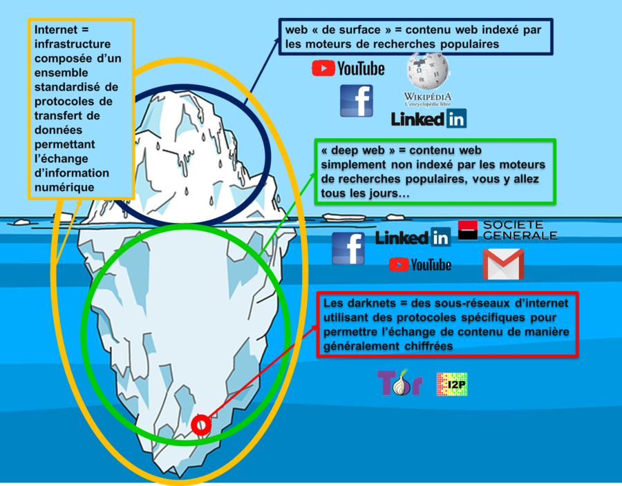

Ce qu'il faut retenir de notre présentation :
• Le web surfacique est la partie découvrable d'internet, accessible via les moteurs de recherche.
• Le Deep web désigne la partie non découvrable d’internet.
• Le Dark web est une partie du Deep web qui permet aux utilisateurs de naviguer anonymement.
• Le Darknet est une sous partie d’internet où on retrouve principalement du cybercrime,
• Le Dark web désigne le contenu, le darknet désigne l'infrastructure, ensemble des réseaux chiffrés permettant d'accéder à ce contenu
